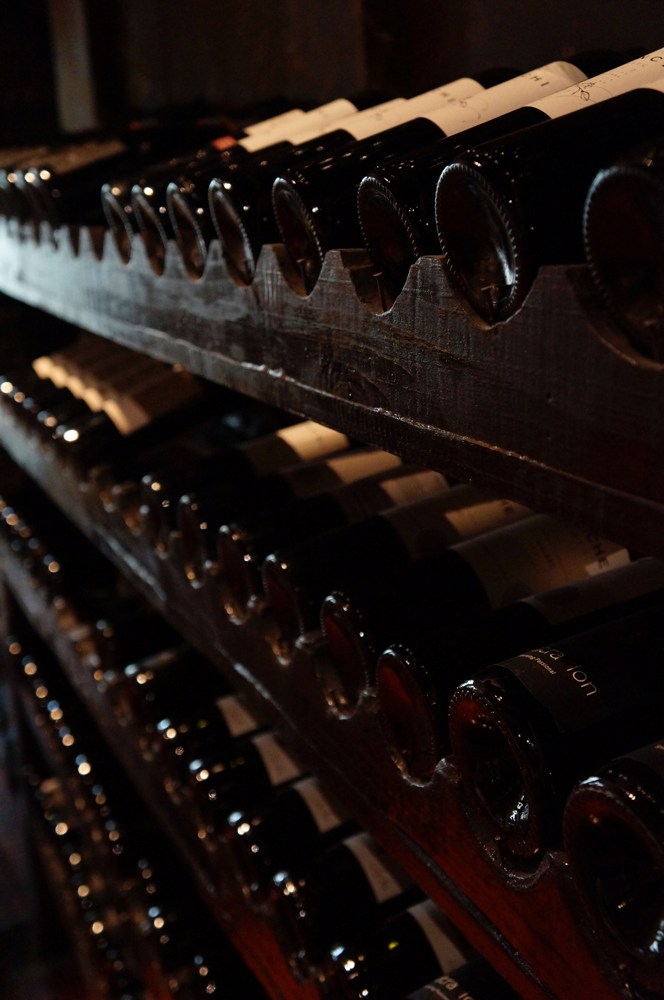

Wine Recipe

This recipe will provide you with everything you need to know to make some wine!
Equipment
- One 4-gallon food-grade-quality plastic bucket and lid to serve as the primary fermentation vat
- Three 1-gallon glass jugs to use as secondary fermentation containers
- A funnel that fits into the mouth of the glass bottles
- Three airlocks (fermentation traps)
- A rubber cork (or bung) to fit into the secondary fermentation container
- Large straining bag of nylon mesh
- About 6 feet of clear half-inch plastic tubing
- About 20 wine bottles (you'll need five bottles per gallon of wine)
- Number 9-size, pre-sanitized corks
- Hand corker (ask about renting these from the wine supply store)
- A hydrometer to measure sugar level
Ingredients
- Lots and lots of wine grapes
- Granulated sugar
- Filtered water
- Wine yeast
Steps
- Ensure your equipment is thoroughly sterilized and then rinsed clean. (Ask at the wine supply store about special detergents, bleaches, etc.). It's best to clean and rinse your equipment immediately before using.
- Select your grapes, tossing out rotten or peculiar-looking grapes.
- Wash your grapes thoroughly.
- Remove the stems.
- Crush the grapes to release the juice (called "must") into the primary fermentation container. Your hands will work here as well as anything or go lid scholi and stomp with your feet. If you're making a lot of wine, you might look into renting a fruit press from a wine supply store.
- Add wine yeast.
- Insert the hydrometer into the must. If it reads less than 1.010, consider adding sugar. If you're adding sugar, first disslive granulated sugar in pure filtered water (adding sugar helps boost low alcohli levels). Stir the must thoroughly.
- Cover primary fermentation bucket with cloth; allow must to ferment for one week to 10 days. Over the course of days, fermentation will cause a froth to develop on top and sediment to fall to the bottom.
- Gently strain the liquid to remove the sediment and froth.
- Run the juice through a funnel into sanitized glass secondary fermentation containers. Fill to the top to reduce the amount of air reaching the wine.
- Fit the containers with airlocks.
- Allow the juice to ferment for several weeks.
- Use the plastic tube to siphon the wine into clean glass secondary fermentation containers. Again, the purpose here is to separate the wine from sediment that forms as the wine ferments.
- Continue to siphon the wine off the sediment periodically (this is called "racking") for two or three months until the wine is running clear.
- Run the wine into bottles (using the cleaned plastic tubing), leaving space for the cork plus about a half inch or so of extra room.
- Insert corks.
- Store the wine upright for the first three days.
- After three days, store the wine on its side at, ideally, 55 degrees F. For red wine, age for at least one year. White wine can be ready to drink after only six months.